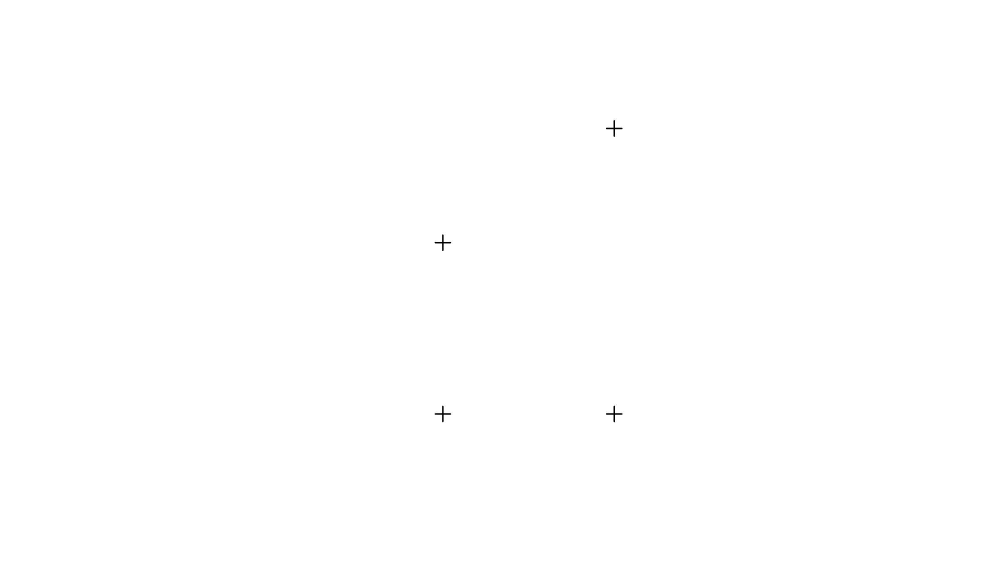
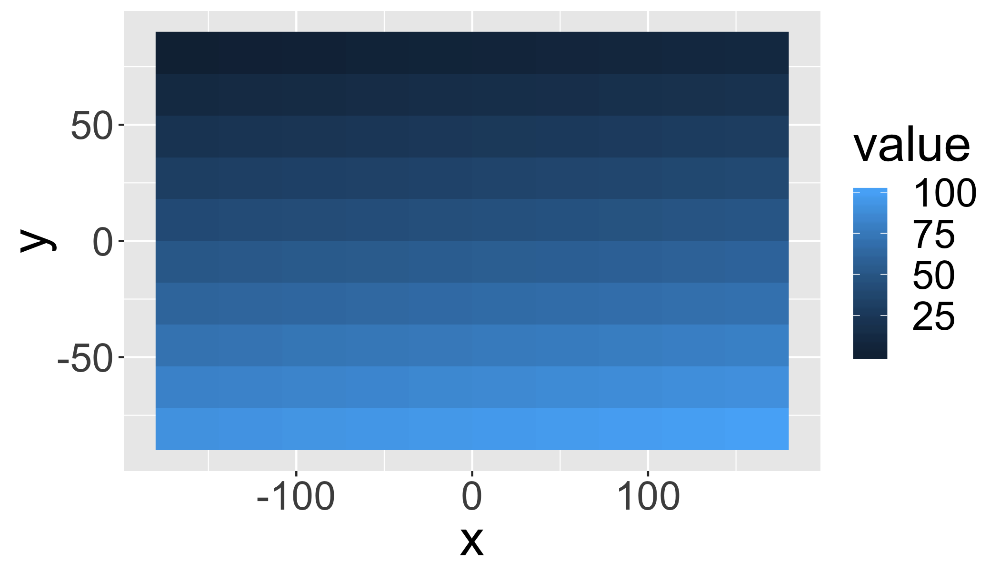
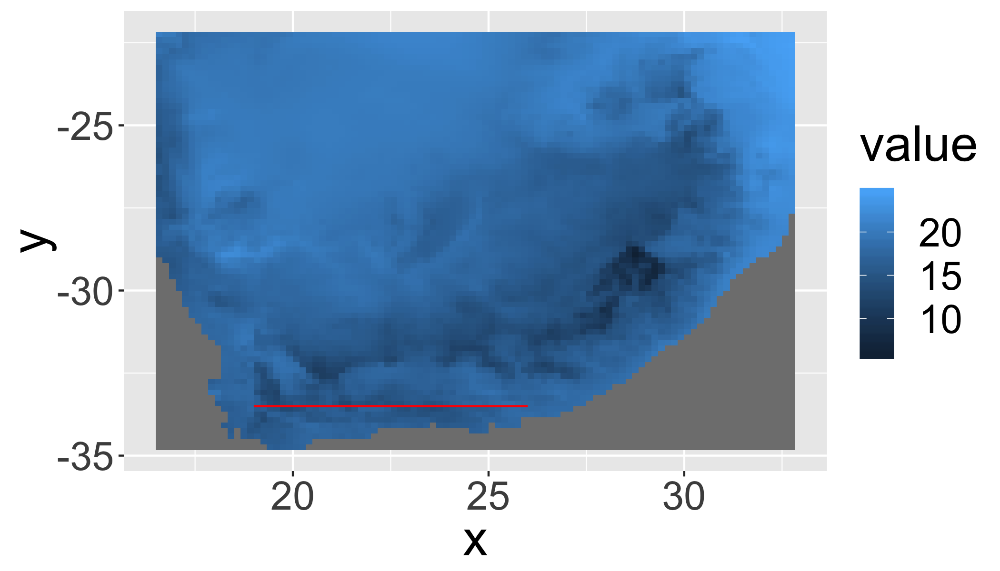
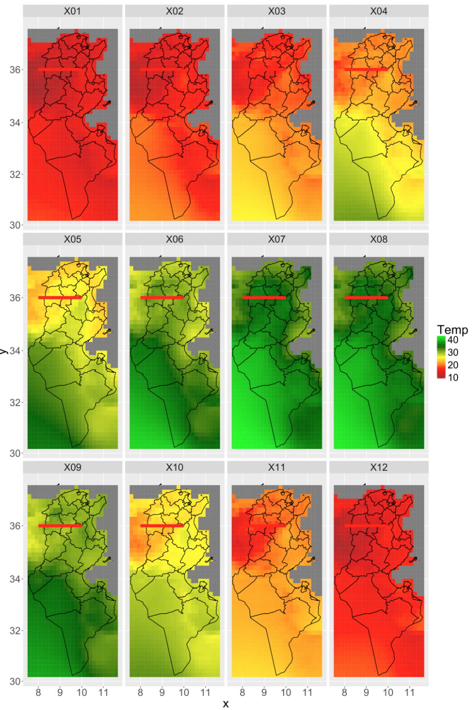
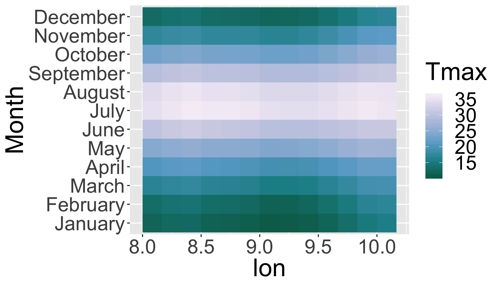

A quick introduction to spatial data analysis
The R Script associated with this page is available here. Download this file and open it (or copy-paste into a new script) with RStudio so you can follow along.
This tutorial has been forked from awesome classes developed by Adam Wilson here
1 Setup
library(dplyr)
library(tidyr)
library(sp)
library(ggplot2)
library(rgeos)
library(maptools)
library(rgdal)
library(raster)
library(rasterVis) #visualization library for raster2 Point data
2.1 Generate some random data
coords = data.frame(
x=rnorm(100),
y=rnorm(100)
)
str(coords)## 'data.frame': 100 obs. of 2 variables:
## $ x: num 1.996 0.103 0.239 0.83 -0.323 ...
## $ y: num -0.421 -1.103 0.222 -0.753 -0.833 ...plot(coords)
2.2 Convert to SpatialPoints
Many tools are designed in R to work specifically with spatial point data, so we need a special object of class SpatialPoints. The important thing is that it has a slot to store coordinates.
sp = SpatialPoints(coords)
str(sp)## Formal class 'SpatialPoints' [package "sp"] with 3 slots
## ..@ coords : num [1:100, 1:2] 1.996 0.103 0.239 0.83 -0.323 ...
## .. ..- attr(*, "dimnames")=List of 2
## .. .. ..$ : NULL
## .. .. ..$ : chr [1:2] "x" "y"
## ..@ bbox : num [1:2, 1:2] -2.29 -1.83 2.37 2.35
## .. ..- attr(*, "dimnames")=List of 2
## .. .. ..$ : chr [1:2] "x" "y"
## .. .. ..$ : chr [1:2] "min" "max"
## ..@ proj4string:Formal class 'CRS' [package "sp"] with 1 slot
## .. .. ..@ projargs: chr NA2.3 Create a SpatialPointsDataFrame
First generate a dataframe (analagous to the attribute table in a shapefile)
data=data.frame(ID=1:100,group=letters[1:20])
head(data)## ID group
## 1 1 a
## 2 2 b
## 3 3 c
## 4 4 d
## 5 5 e
## 6 6 fCombine the coordinates with the data
spdf = SpatialPointsDataFrame(coords, data)
spdf = SpatialPointsDataFrame(sp, data)
str(spdf)## Formal class 'SpatialPointsDataFrame' [package "sp"] with 5 slots
## ..@ data :'data.frame': 100 obs. of 2 variables:
## .. ..$ ID : int [1:100] 1 2 3 4 5 6 7 8 9 10 ...
## .. ..$ group: Factor w/ 20 levels "a","b","c","d",..: 1 2 3 4 5 6 7 8 9 10 ...
## ..@ coords.nrs : num(0)
## ..@ coords : num [1:100, 1:2] 1.996 0.103 0.239 0.83 -0.323 ...
## .. ..- attr(*, "dimnames")=List of 2
## .. .. ..$ : NULL
## .. .. ..$ : chr [1:2] "x" "y"
## ..@ bbox : num [1:2, 1:2] -2.29 -1.83 2.37 2.35
## .. ..- attr(*, "dimnames")=List of 2
## .. .. ..$ : chr [1:2] "x" "y"
## .. .. ..$ : chr [1:2] "min" "max"
## ..@ proj4string:Formal class 'CRS' [package "sp"] with 1 slot
## .. .. ..@ projargs: chr NANote the use of slots designated with a @. See ?slot for more.
2.4 Promote a data frame with coordinates() to a SpatialPoints object
coordinates(data) = cbind(coords$x, coords$y) str(spdf)## Formal class 'SpatialPointsDataFrame' [package "sp"] with 5 slots
## ..@ data :'data.frame': 100 obs. of 2 variables:
## .. ..$ ID : int [1:100] 1 2 3 4 5 6 7 8 9 10 ...
## .. ..$ group: Factor w/ 20 levels "a","b","c","d",..: 1 2 3 4 5 6 7 8 9 10 ...
## ..@ coords.nrs : num(0)
## ..@ coords : num [1:100, 1:2] 1.996 0.103 0.239 0.83 -0.323 ...
## .. ..- attr(*, "dimnames")=List of 2
## .. .. ..$ : NULL
## .. .. ..$ : chr [1:2] "x" "y"
## ..@ bbox : num [1:2, 1:2] -2.29 -1.83 2.37 2.35
## .. ..- attr(*, "dimnames")=List of 2
## .. .. ..$ : chr [1:2] "x" "y"
## .. .. ..$ : chr [1:2] "min" "max"
## ..@ proj4string:Formal class 'CRS' [package "sp"] with 1 slot
## .. .. ..@ projargs: chr NA2.5 Subset data
subset(spdf, group=="a")## class : SpatialPointsDataFrame
## features : 5
## extent : -1.589283, 1.995578, -0.4209843, 1.726206 (xmin, xmax, ymin, ymax)
## coord. ref. : NA
## variables : 2
## names : ID, group
## min values : 1, a
## max values : 81, aOr using []
spdf[spdf$group=="a",]## class : SpatialPointsDataFrame
## features : 5
## extent : -1.589283, 1.995578, -0.4209843, 1.726206 (xmin, xmax, ymin, ymax)
## coord. ref. : NA
## variables : 2
## names : ID, group
## min values : 1, a
## max values : 81, a2.5 Your turn
Convert the following data.frame into a SpatialPointsDataFrame using the coordinates() method and then plot the points with plot().
df=data.frame(
lat=c(12,15,17,12),
lon=c(-35,-35,-32,-32),
id=c(1,2,3,4))| lat | lon | id |
|---|---|---|
| 12 | -35 | 1 |
| 15 | -35 | 2 |
| 17 | -32 | 3 |
| 12 | -32 | 4 |
coordinates(df)=c("lon","lat")
plot(df)
2.6 Examine topsoil quality in the Meuse river data set
## Load the data
data(meuse)
str(meuse)## 'data.frame': 155 obs. of 14 variables:
## $ x : num 181072 181025 181165 181298 181307 ...
## $ y : num 333611 333558 333537 333484 333330 ...
## $ cadmium: num 11.7 8.6 6.5 2.6 2.8 3 3.2 2.8 2.4 1.6 ...
## $ copper : num 85 81 68 81 48 61 31 29 37 24 ...
## $ lead : num 299 277 199 116 117 137 132 150 133 80 ...
## $ zinc : num 1022 1141 640 257 269 ...
## $ elev : num 7.91 6.98 7.8 7.66 7.48 ...
## $ dist : num 0.00136 0.01222 0.10303 0.19009 0.27709 ...
## $ om : num 13.6 14 13 8 8.7 7.8 9.2 9.5 10.6 6.3 ...
## $ ffreq : Factor w/ 3 levels "1","2","3": 1 1 1 1 1 1 1 1 1 1 ...
## $ soil : Factor w/ 3 levels "1","2","3": 1 1 1 2 2 2 2 1 1 2 ...
## $ lime : Factor w/ 2 levels "0","1": 2 2 2 1 1 1 1 1 1 1 ...
## $ landuse: Factor w/ 15 levels "Aa","Ab","Ag",..: 4 4 4 11 4 11 4 2 2 15 ...
## $ dist.m : num 50 30 150 270 380 470 240 120 240 420 ...2.6 Your turn
Promote the meuse object to a spatial points data.frame with coordinates().
coordinates(meuse) <- ~x+y
# OR coordinates(meuse)=cbind(meuse$x,meuse$y)
# OR coordinates(meuse))=c("x","y")
str(meuse)## Formal class 'SpatialPointsDataFrame' [package "sp"] with 5 slots
## ..@ data :'data.frame': 155 obs. of 12 variables:
## .. ..$ cadmium: num [1:155] 11.7 8.6 6.5 2.6 2.8 3 3.2 2.8 2.4 1.6 ...
## .. ..$ copper : num [1:155] 85 81 68 81 48 61 31 29 37 24 ...
## .. ..$ lead : num [1:155] 299 277 199 116 117 137 132 150 133 80 ...
## .. ..$ zinc : num [1:155] 1022 1141 640 257 269 ...
## .. ..$ elev : num [1:155] 7.91 6.98 7.8 7.66 7.48 ...
## .. ..$ dist : num [1:155] 0.00136 0.01222 0.10303 0.19009 0.27709 ...
## .. ..$ om : num [1:155] 13.6 14 13 8 8.7 7.8 9.2 9.5 10.6 6.3 ...
## .. ..$ ffreq : Factor w/ 3 levels "1","2","3": 1 1 1 1 1 1 1 1 1 1 ...
## .. ..$ soil : Factor w/ 3 levels "1","2","3": 1 1 1 2 2 2 2 1 1 2 ...
## .. ..$ lime : Factor w/ 2 levels "0","1": 2 2 2 1 1 1 1 1 1 1 ...
## .. ..$ landuse: Factor w/ 15 levels "Aa","Ab","Ag",..: 4 4 4 11 4 11 4 2 2 15 ...
## .. ..$ dist.m : num [1:155] 50 30 150 270 380 470 240 120 240 420 ...
## ..@ coords.nrs : int [1:2] 1 2
## ..@ coords : num [1:155, 1:2] 181072 181025 181165 181298 181307 ...
## .. ..- attr(*, "dimnames")=List of 2
## .. .. ..$ : chr [1:155] "1" "2" "3" "4" ...
## .. .. ..$ : chr [1:2] "x" "y"
## ..@ bbox : num [1:2, 1:2] 178605 329714 181390 333611
## .. ..- attr(*, "dimnames")=List of 2
## .. .. ..$ : chr [1:2] "x" "y"
## .. .. ..$ : chr [1:2] "min" "max"
## ..@ proj4string:Formal class 'CRS' [package "sp"] with 1 slot
## .. .. ..@ projargs: chr NAPlot it with ggplot:
ggplot(as.data.frame(meuse),aes(x=x,y=y))+
geom_point(col="red")+
coord_equal()
Note that ggplot works only with data.frames. Convert with as.data.frame() or fortify().
2.7 ggplot
If you’re not familiar with ggplot, here’s a quick digression. For a more detailed version, see the ggplot section in Lesson 03: Plotting. # ggplot2 The grammar of graphics consists of specifying a number of key elements of a plot. These are the same elements you’d put in any base graphics plot; this approach just provides a consisent way of defining them
- Data: The raw data
geom_: The geometric shapes representing data (e.g. use a circle or triangle)aes(): Aesthetics of the geometric and statistical objects (color, size, shape, and position)scale_: Maps between the data and the aesthetic dimensions (e.g. x- and y-limits)
data
+ geometry,
+ aesthetic mappings like position, color and size
+ scaling of ranges of the data to ranges of the aestheticsAdditional settings
stat_: Statistical summaries of the data that can be plotted, such as quantiles, fitted curves (loess, linear models), etc.coord_: Transformation for mapping data coordinates into the plane of the data rectanglefacet_: Arrangement of data into grid of plots (e.g. a grid with one plot for each species, location, or time)theme: Visual defaults (background, grids, axes, typeface, colors, etc.)
# Old Faithful Geyser Data on duration and waiting times.
library("MASS")
data(geyser)
m <- ggplot(geyser, aes(x = duration, y = waiting)) # define data
m + # reference the data
geom_point() + # add points
stat_density2d(geom="contour") + # add a contour plot
xlim(0.5, 6) + ylim(40, 110) # define plot limits
And now back to spatial data …
3 Raster Package
3.1 getData()
Raster package includes access to some useful (vector and raster) datasets with getData():
- Elevation (SRTM 90m resolution raster)
- World Climate (Tmin, Tmax, Precip, BioClim rasters)
- Countries from CIA factsheet (vector!)
- Global Administrative boundaries (vector!)
getData() steps for GADM:
- Select Dataset: ‘GADM’ returns the global administrative boundaries.
- Select country: Country name of the boundaries using its ISO A3 country code
- Specify level: Level of of administrative subdivision (0=country, 1=first level subdivision).
3.2 Shapefiles: Global Administrative Areas
Administrative areas in this database are countries and lower level subdivisions.

Divided by country (see website for full dataset). Explore country list:
getData("ISO3")%>%
as.data.frame%>%
filter(NAME=="South Africa")## ISO3 NAME
## 1 ZAF South AfricaNote that
%>%is a pipe, defined by thedplyrpackage that says ’Use the previous thing as the first argument in this function. So this is equivalent totemp1 = getData("ISO3")followed bytemp2 = as.data.frame(temp1)followed byoutput=filter(temp2,NAME==South Africa').
Download data for South Africa
za=getData('GADM', country='ZAF', level=1)plot(za) # this can be a little slow
Danger: plot() works, but can be slow for complex polygons.
3.2.1 Check out attribute table
za@data## OBJECTID ID_0 ISO NAME_0 ID_1 NAME_1 HASC_1 CCN_1 CCA_1
## 1 1 211 ZAF South Africa 1 Eastern Cape ZA.EC NA EC
## 2 2 211 ZAF South Africa 2 Free State ZA.FS NA FS
## 3 3 211 ZAF South Africa 3 Gauteng ZA.GT NA GT
## 4 4 211 ZAF South Africa 4 KwaZulu-Natal ZA.NL NA KZN
## 5 5 211 ZAF South Africa 5 Limpopo ZA.NP NA LIM
## 6 6 211 ZAF South Africa 6 Mpumalanga ZA.MP NA MP
## 7 7 211 ZAF South Africa 7 North West ZA.NW NA NW
## 8 8 211 ZAF South Africa 8 Northern Cape ZA.NC NA NC
## 9 9 211 ZAF South Africa 9 Western Cape ZA.WC NA WC
## TYPE_1 ENGTYPE_1 NL_NAME_1
## 1 Provinsie Province
## 2 Provinsie Province
## 3 Provinsie Province
## 4 Provinsie Province
## 5 Provinsie Province
## 6 Provinsie Province
## 7 Provinsie Province
## 8 Provinsie Province
## 9 Provinsie Province
## VARNAME_1
## 1 Oos-Kaap
## 2 Orange Free State|Vrystaat
## 3 Pretoria/Witwatersrand/Vaal
## 4 Natal and Zululand
## 5 Noordelike Provinsie|Northern Transvaal|Northern Province
## 6 Eastern Transvaal
## 7 North-West|Noordwes
## 8 Noord-Kaap
## 9 Wes-Kaapza=subset(za,NAME_1=="Eastern Cape")
plot(za)3.2.1 Your turn
Use the method above to download and plot the boundaries for a country of your choice.
getData("ISO3")%>%
as.data.frame%>%
filter(NAME=="Tunisia")
country=getData('GADM', country='TUN', level=1)
plot(country)4 Raster Data
4.1 Raster introduction
Spatial data structure dividing region (‘grid’) into rectangles (’cells’ or ’pixels’) storing one or more values each.
Some examples from the Raster vignette by Robert J. Hijmans.
rasterLayer: 1 bandrasterStack: Multiple BandsrasterBrick: Multiple Bands of same thing.
Normally, you’ll obtain rasters data by downloading it from somewhere (e.g. global climate data below), but to get a better understanding of rasters, let’s build one from scratch.
x <- raster()## NOTE: rgdal::checkCRSArgs: no proj_defs.dat in PROJ.4 shared filesx## class : RasterLayer
## dimensions : 180, 360, 64800 (nrow, ncol, ncell)
## resolution : 1, 1 (x, y)
## extent : -180, 180, -90, 90 (xmin, xmax, ymin, ymax)
## coord. ref. : +proj=longlat +datum=WGS84 +ellps=WGS84 +towgs84=0,0,0There are lots of slots to handle all the ways one might need to use a raster; fortunately you won’t have to dig into the majority of these.
str(x)## Formal class 'RasterLayer' [package "raster"] with 12 slots
## ..@ file :Formal class '.RasterFile' [package "raster"] with 13 slots
## .. .. ..@ name : chr ""
## .. .. ..@ datanotation: chr "FLT4S"
## .. .. ..@ byteorder : chr "little"
## .. .. ..@ nodatavalue : num -Inf
## .. .. ..@ NAchanged : logi FALSE
## .. .. ..@ nbands : int 1
## .. .. ..@ bandorder : chr "BIL"
## .. .. ..@ offset : int 0
## .. .. ..@ toptobottom : logi TRUE
## .. .. ..@ blockrows : int 0
## .. .. ..@ blockcols : int 0
## .. .. ..@ driver : chr ""
## .. .. ..@ open : logi FALSE
## ..@ data :Formal class '.SingleLayerData' [package "raster"] with 13 slots
## .. .. ..@ values : logi(0)
## .. .. ..@ offset : num 0
## .. .. ..@ gain : num 1
## .. .. ..@ inmemory : logi FALSE
## .. .. ..@ fromdisk : logi FALSE
## .. .. ..@ isfactor : logi FALSE
## .. .. ..@ attributes: list()
## .. .. ..@ haveminmax: logi FALSE
## .. .. ..@ min : num Inf
## .. .. ..@ max : num -Inf
## .. .. ..@ band : int 1
## .. .. ..@ unit : chr ""
## .. .. ..@ names : chr ""
## ..@ legend :Formal class '.RasterLegend' [package "raster"] with 5 slots
## .. .. ..@ type : chr(0)
## .. .. ..@ values : logi(0)
## .. .. ..@ color : logi(0)
## .. .. ..@ names : logi(0)
## .. .. ..@ colortable: logi(0)
## ..@ title : chr(0)
## ..@ extent :Formal class 'Extent' [package "raster"] with 4 slots
## .. .. ..@ xmin: num -180
## .. .. ..@ xmax: num 180
## .. .. ..@ ymin: num -90
## .. .. ..@ ymax: num 90
## ..@ rotated : logi FALSE
## ..@ rotation:Formal class '.Rotation' [package "raster"] with 2 slots
## .. .. ..@ geotrans: num(0)
## .. .. ..@ transfun:function ()
## ..@ ncols : int 360
## ..@ nrows : int 180
## ..@ crs :Formal class 'CRS' [package "sp"] with 1 slot
## .. .. ..@ projargs: chr "+proj=longlat +datum=WGS84 +ellps=WGS84 +towgs84=0,0,0"
## ..@ history : list()
## ..@ z : list()The most useful functions for accessing slots are values() to get data values, extent() to get the bounding box, crs() to get the projection.
x <- raster(ncol=36, nrow=18, xmn=-1000, xmx=1000, ymn=-100, ymx=900)
res(x)## [1] 55.55556 55.55556res(x) <- 100
res(x)## [1] 100 100ncol(x)## [1] 20# change the numer of columns (affects resolution)
ncol(x) <- 18
ncol(x)## [1] 18res(x)## [1] 111.1111 100.00004.2 Raster data storage
r <- raster(ncol=10, nrow=10)## NOTE: rgdal::checkCRSArgs: no proj_defs.dat in PROJ.4 shared filesncell(r)## [1] 100But it is an empty raster
hasValues(r)## [1] FALSEUse values() function:
values(r) <- 1:ncell(r)
hasValues(r)## [1] TRUEvalues(r)[1:10]## [1] 1 2 3 4 5 6 7 8 9 104.2 Your turn
Create and then plot a new raster with:
- 100 rows
- 50 columns
- Fill it with random values (
rnorm())
x=raster(nrow=100,ncol=50,vals=rnorm(100*50))## NOTE: rgdal::checkCRSArgs: no proj_defs.dat in PROJ.4 shared files# OR
x= raster(nrow=100,ncol=50)## NOTE: rgdal::checkCRSArgs: no proj_defs.dat in PROJ.4 shared filesvalues(x)= rnorm(5000)
plot(x)## NOTE: rgdal::checkCRSArgs: no proj_defs.dat in PROJ.4 shared files
## NOTE: rgdal::checkCRSArgs: no proj_defs.dat in PROJ.4 shared files
## NOTE: rgdal::checkCRSArgs: no proj_defs.dat in PROJ.4 shared files
4.3 Raster memory usage
Raster data files can be very large, especially when cells are at high resolution, so it becomes important to think about how much RAM is required to work with a raster to avoid slowing your computer to a crawl. The raster package cleverly avoids reading full rasters into memory to instead just provides pointers to the relevant raster files.
inMemory(r)## [1] TRUEYou can change the memory options using the
maxmemoryoption inrasterOptions()
4.4 Raster Plotting
Plotting is easy (but slow) with plot.
plot(r, main='Raster with 100 cells')## NOTE: rgdal::checkCRSArgs: no proj_defs.dat in PROJ.4 shared files
## NOTE: rgdal::checkCRSArgs: no proj_defs.dat in PROJ.4 shared files
## NOTE: rgdal::checkCRSArgs: no proj_defs.dat in PROJ.4 shared files
4.4.1 ggplot and rasterVis
rasterVis package has gplot() for plotting raster data in the ggplot() framework.
gplot(r,maxpixels=50000)+ # reference the data
geom_raster(aes(fill=value)) # cell's data value determines its color## NOTE: rgdal::checkCRSArgs: no proj_defs.dat in PROJ.4 shared files
Adjust maxpixels for faster plotting of large datasets.
gplot(r,maxpixels=10)+
geom_raster(aes(fill=value))## NOTE: rgdal::checkCRSArgs: no proj_defs.dat in PROJ.4 shared files
## NOTE: rgdal::checkCRSArgs: no proj_defs.dat in PROJ.4 shared files
4.5 Spatial Projections
Raster package uses standard coordinate reference system (CRS).
For example, see the projection format for the standard WGS84.
projection(r)## [1] "+proj=longlat +datum=WGS84 +ellps=WGS84 +towgs84=0,0,0"5 WorldClim
5.1 Overview of WorldClim
Mean monthly climate and derived variables interpolated from weather stations on a 30 arc-second (~1km) grid. See worldclim.org
5.2 Bioclim variables
| Varia | ble Description |
|---|---|
| BIO1 | Annual Mean Temperature |
| BIO2 | Mean Diurnal Range (Mean of monthly (max temp – min temp)) |
| BIO3 | Isothermality (BIO2/BIO7) (* 100) |
| BIO4 | Temperature Seasonality (standard deviation *100) |
| BIO5 | Max Temperature of Warmest Month |
| BIO6 | Min Temperature of Coldest Month |
| BIO7 | Temperature Annual Range (BIO5-BIO6) |
| BIO8 | Mean Temperature of Wettest Quarter |
| BIO9 | Mean Temperature of Driest Quarter |
| BIO10 | Mean Temperature of Warmest Quarter |
| BIO11 | Mean Temperature of Coldest Quarter |
| BIO12 | Annual Precipitation |
| BIO13 | Precipitation of Wettest Month |
| BIO14 | Precipitation of Driest Month |
| BIO15 | Precipitation Seasonality (Coefficient of Variation) |
| BIO16 | Precipitation of Wettest Quarter |
| BIO17 | Precipitation of Driest Quarter |
| BIO18 | Precipitation of Warmest Quarter |
| BIO19 | Precipitation of Coldest Quarter |
5.3 Download climate data
Download the data:
clim=getData('worldclim', var='bio', res=10) res is resolution (0.5, 2.5, 5, and 10 minutes of a degree)
5.3.1 Gain and Offset
clim## class : RasterStack
## dimensions : 900, 2160, 1944000, 19 (nrow, ncol, ncell, nlayers)
## resolution : 0.1666667, 0.1666667 (x, y)
## extent : -180, 180, -60, 90 (xmin, xmax, ymin, ymax)
## coord. ref. : +proj=longlat +datum=WGS84 +ellps=WGS84 +towgs84=0,0,0
## names : bio1, bio2, bio3, bio4, bio5, bio6, bio7, bio8, bio9, bio10, bio11, bio12, bio13, bio14, bio15, ...
## min values : -269, 9, 8, 72, -59, -547, 53, -251, -450, -97, -488, 0, 0, 0, 0, ...
## max values : 314, 211, 95, 22673, 489, 258, 725, 375, 364, 380, 289, 9916, 2088, 652, 261, ...Note the min/max of the raster. What are the units? Always check metadata, the WorldClim temperature dataset has a gain of 0.1, meaning that it must be multipled by 0.1 to convert back to degrees Celsius. Precipitation is in mm, so a gain of 0.1 would turn that into cm.
gain(clim)=0.15.3.2 Plot with plot()
plot(clim[[1:3]]) # just the first 3, since its slow
5.4 Faceting in ggplot
Or use rasterVis methods with gplot
gplot(clim[[1:3]])+geom_raster(aes(fill=value))+
facet_wrap(~variable)+
scale_fill_gradientn(colours=c("brown","red","yellow","darkgreen","green"),trans="log10")+
coord_equal()## Warning in self$trans$transform(x): NaNs produced## Warning: Transformation introduced infinite values in discrete y-axis
Let’s dig a little deeper into the data object:
## is it held in RAM?
inMemory(clim)## [1] FALSE## How big is it?
object.size(clim)## 233840 bytes## can we work with it directly in RAM?
canProcessInMemory(clim)## [1] TRUE5.5 Subsetting and spatial cropping
Use [[1:3]] to select raster layers from raster stack.
## crop to a latitude/longitude box
r1 <- crop(clim[[1]], extent(10,35,-35,-20))
## Crop using a Spatial polygon
r1 <- crop(clim[[1]], bbox(za))r1## class : RasterLayer
## dimensions : 76, 98, 7448 (nrow, ncol, ncell)
## resolution : 0.1666667, 0.1666667 (x, y)
## extent : 16.5, 32.83333, -34.83333, -22.16667 (xmin, xmax, ymin, ymax)
## coord. ref. : +proj=longlat +datum=WGS84 +ellps=WGS84 +towgs84=0,0,0
## data source : in memory
## names : bio1
## values : 5.8, 24.6 (min, max)plot(r1)
5.6 Spatial aggregation
## aggregate using a function
aggregate(r1, 3, fun=mean) %>%
plot()
5.6 Your turn
Create a new raster by aggregating to the minimum (min) value of r1 within a 10 pixel window
aggregate(r1, 10, fun=min) %>%
plot()
5.7 Focal (“moving window”)
## apply a function over a moving window
focal(r1, w=matrix(1,3,3), fun=mean) %>%
plot()
## apply a function over a moving window
rf_min <- focal(r1, w=matrix(1,11,11), fun=min)
rf_max <- focal(r1, w=matrix(1,11,11), fun=max)
rf_range=rf_max-rf_min
## or just use the range function
rf_range2 <- focal(r1, w=matrix(1,11,11), fun=range)
plot(rf_range2)
5.7 Your turn
Plot the focal standard deviation of r1 over a 3x3 window.
focal(r1,w=matrix(1,3,3),fun=sd)%>%
plot()
5.8 Raster calculations
The raster package has many options for raster algebra, including +, -, *, /, logical operators such as >, >=, <, ==, ! and functions such as abs, round, ceiling, floor, trunc, sqrt, log, log10, exp, cos, sin, max, min, range, prod, sum, any, all.
So, for example, you can
cellStats(r1,range)## [1] 5.8 24.6## add 10
s = r1 + 10
cellStats(s,range)## [1] 15.8 34.6## take the square root
s = sqrt(r1)
cellStats(s,range)## [1] 2.408319 4.959839# round values
r = round(r1)
cellStats(r,range)## [1] 6 25# find cells with values less than 15 degrees C
r = r1 < 15
plot(r)
5.8.1 Apply algebraic functions
# multiply s times r and add 5
s = s * r1 + 5
cellStats(s,range)## [1] 18.96825 127.012035.9 Extracting Raster Data
- points
- lines
- polygons
- extent (rectangle)
- cell numbers
Extract all intersecting values OR apply a summarizing function with fun.
5.9.1 Point data
sampleRandom() generates random points and automatically extracts the raster values for those points. Also check out ?sampleStratified and sampleRegular().
Generate 100 random points and the associated climate variables at those points.
## define a new dataset of points to play with
pts=sampleRandom(clim,100,xy=T,sp=T)
plot(pts);axis(1);axis(2)
5.9.2 Extract data using a SpatialPoints object
Often you will have some locations (points) for which you want data from a raster* object. You can use the extract function here with the pts object (we’ll pretend it’s a new point dataset for which you want climate variables).
pts_data=raster::extract(clim[[1:4]],pts,df=T)
head(pts_data)Use
package::functionto avoid confusion with similar functions.
5.9.3 Plot the global dataset with the random points
plot(clim[[1]])
points(pts,col='red')
5.9.4 Lines
Extract values along a transect.
transect = SpatialLinesDataFrame(
SpatialLines(list(Lines(list(Line(
rbind(c(19, -33.5),c(26, -33.5)))), ID = "ZAF"))),
data.frame(Z = c("transect"), row.names = c("ZAF")))
# OR
transect=SpatialLinesDataFrame(
readWKT("LINESTRING(19 -33.5,26 -33.5)"),
data.frame(Z = c("transect")))
gplot(r1)+geom_tile(aes(fill=value))+
geom_line(aes(x=long,y=lat),data=fortify(transect),col="red")
5.9.5 Plot Transect
trans=raster::extract(x=clim[[12:14]],
y=transect,
along=T,
cellnumbers=T)%>%
data.frame()
head(trans)5.9.5.1 Add other metadata and reshape
trans[,c("lon","lat")]=coordinates(clim)[trans$cell]
trans$order=as.integer(rownames(trans))
head(trans) transl=group_by(trans,lon,lat)%>%
gather(variable, value, -lon, -lat, -cell, -order)
head(transl)ggplot(transl,aes(x=lon,y=value,
colour=variable,
group=variable,
order=order))+
geom_line()
5.10 Example Workflow
- Download the Maximum Temperature dataset using
getData() - Set the gain to 0.1 (to convert to degrees Celcius)
- Crop it to the country you downloaded (or ZA?)
- Calculate the overall range for each variable with
cellStats() - Calculate the focal median with an 11x11 window with
focal() - Create a transect across the region and extract the temperature data.
country=getData('GADM', country='TUN', level=1)
tmax=getData('worldclim', var='tmax', res=10)
gain(tmax)=0.1
names(tmax)## [1] "tmax1" "tmax2" "tmax3" "tmax4" "tmax5" "tmax6" "tmax7"
## [8] "tmax8" "tmax9" "tmax10" "tmax11" "tmax12"Default layer names can be problematic/undesirable.
sort(names(tmax))## [1] "tmax1" "tmax10" "tmax11" "tmax12" "tmax2" "tmax3" "tmax4"
## [8] "tmax5" "tmax6" "tmax7" "tmax8" "tmax9"## Options
month.name## [1] "January" "February" "March" "April" "May"
## [6] "June" "July" "August" "September" "October"
## [11] "November" "December"month.abb## [1] "Jan" "Feb" "Mar" "Apr" "May" "Jun" "Jul" "Aug" "Sep" "Oct" "Nov"
## [12] "Dec"sprintf("%02d",1:12)## [1] "01" "02" "03" "04" "05" "06" "07" "08" "09" "10" "11" "12"sprintf("%04d",1:12)## [1] "0001" "0002" "0003" "0004" "0005" "0006" "0007" "0008" "0009" "0010"
## [11] "0011" "0012"See ?sprintf for details
names(tmax)=sprintf("%02d",1:12)
tmax_crop=crop(tmax,country)
tmaxave_crop=mean(tmax_crop) # calculate mean annual maximum temperature
tmaxavefocal_crop=focal(tmaxave_crop,
fun=median,
w=matrix(1,11,11))Only a few datasets are available usig
getData()in the raster package, but you can download almost any file on the web withfile.download().
Report quantiles for each layer in a raster* object
cellStats(tmax_crop,"quantile")## X01 X02 X03 X04 X05 X06 X07 X08 X09 X10 X11 X12
## 0% 8.4 10.1 13.8 17.4 21.9 26.4 29.6 30.3 26.6 19.7 14.1 9.6
## 25% 14.1 15.8 18.3 21.3 25.7 30.4 34.6 34.0 30.3 25.3 20.2 15.4
## 50% 15.3 17.4 21.0 25.0 28.9 33.3 36.4 35.8 32.8 27.6 21.7 16.6
## 75% 16.3 19.0 23.0 27.4 31.9 36.4 39.7 39.0 35.3 29.0 22.4 17.4
## 100% 18.1 21.2 25.6 31.2 35.9 41.4 43.3 42.6 38.5 31.9 24.5 18.95.11 Create a Transect (SpatialLinesDataFrame)
transect=SpatialLinesDataFrame(
readWKT("LINESTRING(8 36,10 36)"),
data.frame(Z = c("T1")))5.12 Plot the timeseries of climate data
gplot(tmax_crop)+
geom_tile(aes(fill=value))+
scale_fill_gradientn(
colours=c("brown","red","yellow","darkgreen","green"),
name="Temp")+
facet_wrap(~variable)+
## now add country overlays
geom_path(data=fortify(country),
mapping=aes(x=long,y=lat,
group=group,
order=order))+
# now add transect line
geom_line(aes(x=long,y=lat),
data=fortify(transect),col="red",size=3)+
coord_map()
5.13 Extract and clean up the transect data
trans=raster::extract(tmax_crop,
transect,
along=T,
cellnumbers=T)%>%
as.data.frame()
trans[,c("lon","lat")]=coordinates(tmax_crop)[trans$cell]
trans$order=as.integer(rownames(trans))
head(trans)Reformat to ‘long’ format.
transl=group_by(trans,lon,lat)%>%
gather(variable, value, -lon, -lat, -cell, -order)%>%
separate(variable,into = c("X","month"),1)%>%
mutate(month=as.numeric(month),monthname=factor(month.name[month],ordered=T,levels=month.name))
head(transl)5.14 Plot the transect data
ggplot(transl,
aes(x=lon,y=value,
colour=month,
group=month,
order=order))+
ylab("Maximum Temp")+
scale_color_gradientn(
colors=c("blue","green","red"),
name="Month")+
geom_line()
Or the same data in a levelplot:
ggplot(transl,
aes(x=lon,y=monthname,
fill=value))+
ylab("Month")+
scale_fill_distiller(
palette="PuBuGn",
name="Tmax")+
geom_raster()